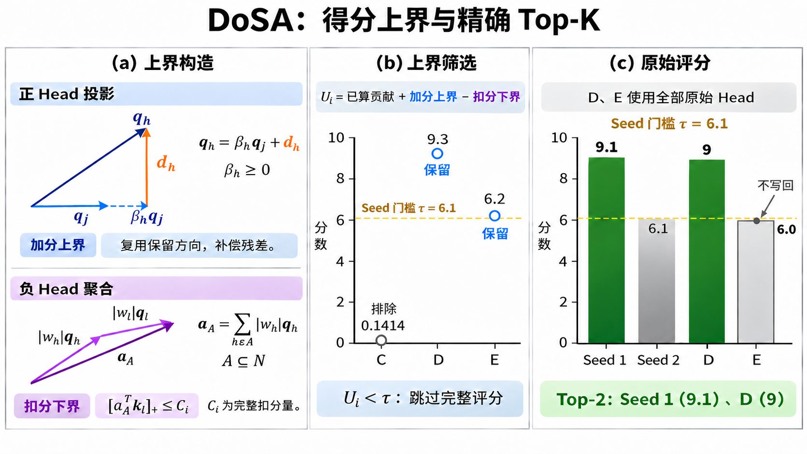
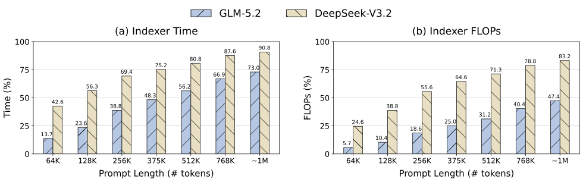
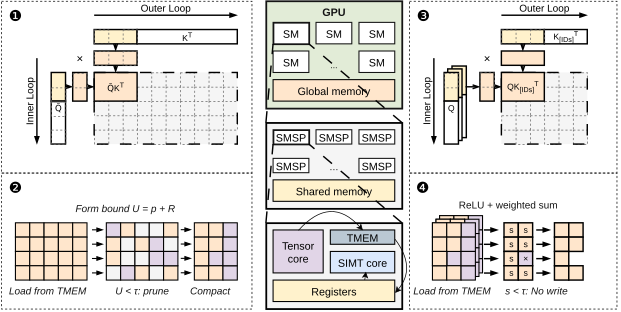
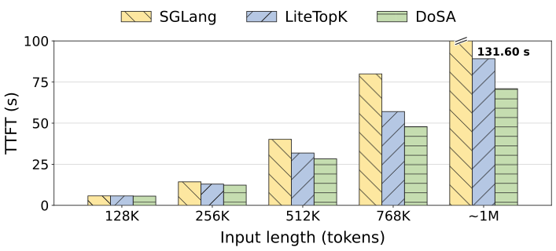
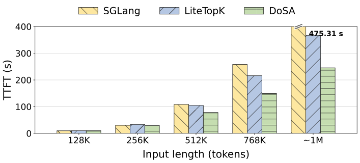

在保持原始 Top-K 选择规则的条件下，减少完整多头评分、分数写回与选择开销。
Fanxu Meng · Taosong Fang｜Dots Studio, Xiaohongshu Inc.｜arXiv:2610.13990v1

：query 位置；：可见 token 位置；：Indexer head。固定 时，Indexer query 记为 。




GLM-5.2，单 GPU。三类输入：英文、中文和代码；五种长度：128K、256K、512K、768K、1M；四种 chunks：4K、8K、16K、32K，共 60 种配置。回放最后一个 query chunk 的 21 个 Indexer 层，包含 Q/K 准备，用 CUDA events 计时。
§4.2 报告这 60 种配置中 DoSA 均更快。约 1M 时相对 SGLang 为 2.47–2.74×。这些结论限于所测配置。
正贡献投影满足下式。单一锚点下的最优性针对统一范数补偿；联合残差界利用残差方向的关系进一步缩小补偿。任意合法保留集合都能用于正确性分析，选择方式影响效率。
附录 B.3 给出排除条件 ，其中 为距真正入选线的差距， 为上界余量， 为 seed 门槛不足量。更好的 seed 与更紧的上界共同减少保留候选。
逻辑内积工作量比例约为：
为初始化 keys 比例， 为保留比例， 为辅助行数。FP8 路径采用两个辅助行。这个模型未包含准备、填充、选择和异常处理等成本。
附录 D.2 中，移除负贡献聚合使 Indexer 时间变为 DoSA 的 9.51 倍，计时包含候选容量不足时的全域计算；聚合全部负 heads 则使保留率升到 4.06%，延迟增加 12.0%。
固定 query 与 H、D 时，原始扫描和筛选工作均随可见 key 数 N 线性增长。处理整个输入时，query 总数也会增长；完整 Prefill 成本需要同时考虑两个维度。模型参数量本身不足以确定收益，还需看 H、D、层数及 Indexer 时间占比。本文 TTFT 采用独立请求，缺少持续到达请求下的排队与吞吐量结果。